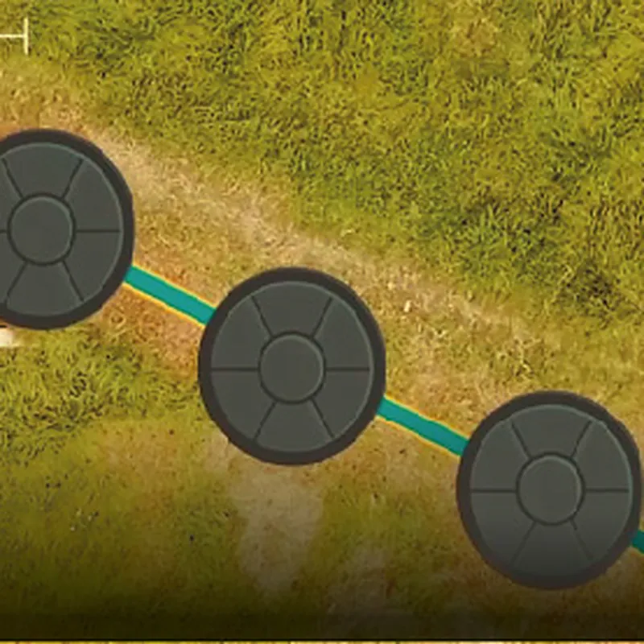

Tanques de polietileno
Tanque de agua Eternit
Los tanques de agua Eternit son de polietileno con materias primas grado FDA: livianos, higiénicos y especificados para la intemperie. Hay cónicos de 250 a 6.000 litros, con doble capa que bloquea los rayos UV, y tipo botella de 750 y 1.100 litros. Cumplen la NTC 4384 y tienen 10 años de garantía por defectos de fabricación.
Tanque de 1.000 litros
- Ø 1,23 m · 1,03 m de alto
- 19 kg vacío · 1.019 kg lleno
- Capacidades
- 250–6.000L
- Alto
- 0,44–2,20m
- Peso vacío
- 7–115kg
- Garantía
- 10años
- Norma
- NTC 4384
- Materias primas
- FDAgrado
- Garantía de 10 años
- Grado FDA
- NTC 4384
- Distribuidores en todo el país
Datos de las fichas técnicas oficiales (versión oct. 2023) · revisado
Medidas
Del Mini al de 6.000 litros, a escala.
Elige un tanque y compáralo con una persona de 1,70 m. La base debe ser más grande que la tapa y soportar el tanque lleno: cada litro de agua pesa un kilo.
- Diámetro
- 1,23m
- Alto
- 1,03m
- Peso vacío
- 19kg
- Peso lleno aprox.
- 1.019kg
Tapa Ø 1,28 m × 0,24 m · base de apoyo de al menos Ø 1,28 m · 8 tanques por arrume en el camión
Ver tabla completa de medidas
| Tanque cónico | Ø mayor D (mm) | Ø base D1 (mm) | Alto H (mm) | Tapa Ø × alto (mm) | Peso (kg)* | Por arrume |
|---|---|---|---|---|---|---|
| Mini 250 | 932 | 815 | 443 | 989 × 124 | 7,2 | 15 |
| 250 L | 810 | 677 | 720 | 850 × 138 | 7 | 13 |
| 500 L | 931 | 758 | 934 | 975 × 170 | 9,5 | 12 |
| 1.000 L | 1.232 | 1.031 | 1.030 | 1.275 × 236 | 19 | 8 |
| 2.000 L | 1.520 | 1.220 | 1.550 | 1.585 × 280 | 35,5 | 5 |
| 6.000 L | 2.205 | 1.800 | 2.197 | 2.277 × 250 | 115 | 2 |
| Agrotanque 250 L | 932 | 815 | 443 | — | 6,5 | 15 |
| Tipo botella | Ø A (mm) | Alto B (mm) | Peso (kg) |
|---|---|---|---|
| 750 L | 995 | 1.120 | 13 |
| 1.100 L | 1.150 | 1.270 | 18 |
| Tapa click | 550 | 124 | 1,2 |
Medidas en milímetros. * Peso de tanque y tapa. Tipo botella: valores indicativos (±5 %), boca de 490 mm. «Por arrume»: tanques por arrume vertical en el camión. Fuente: fichas técnicas Tanques Plásticos y Tanques Botellas, versión octubre de 2023.
Calculadora
¿Qué tanque necesitas?
Dinos cuántas personas viven, cuántos días quieres tener agua si se va el servicio y si tienes límite de altura. Te decimos qué tanque te sirve, cuánto te dura y cuánto pesa lleno.
800litros de reserva
Te sirve el tanque de 1.000 litros.
- Gasto diario
- —
- Con ese tanque te dura
- —
- Peso lleno aprox.
- —
- Medidas
- —
- Alto con tapa aprox.
- —
- Base de apoyo mínima
- —
Cálculo orientativo: personas × días × litros por persona. Medidas y pesos de las fichas técnicas (oct. 2023); el peso lleno suma un kilo por litro de agua. Confirma con un asesor y la ficha técnica antes de instalar.

Instalación
Seis pasos para que el tanque dure.
Lava el interior
Antes de instalarlo, lava el tanque por dentro con un desinfectante y enjuágalo.
Prepara la base
Totalmente horizontal, limpia y sin irregularidades que generen apoyos puntuales. Debe ser más grande que el diámetro de la tapa, para que nada quede por fuera.
Cuenta el peso del agua
Cada litro pesa un kilo: la estructura debe soportar más que el tanque lleno. Un tanque de 1.000 litros lleno pesa más de una tonelada.
Conecta con los accesorios Eternit
Entrada de ½" con válvula y flotador, salida de 1" al servicio y rebose de 1". Usa las conexiones que suministra Eternit y no hagas orificios nuevos ni agrandes los de fábrica.
Instala sin tensiones
Tuberías y mangueras sin torcer y sin halar el tanque. No lo entierres ni lo instales cerca de fuentes de calor.
Mantenlo tapado y revísalo
Debe permanecer tapado, lleno y con la ventilación libre. Inspecciónalo y límpialo al menos una vez al año.
Instalación hidráulica
Qué va conectado al tanque.
Usa siempre las conexiones y accesorios que suministra Eternit. En los tipo botella, la entrada y la salida son de ½" y la salida lleva válvula con varilla y bola.
- 1Entrada
- Conexión de ½" con válvula de entrada y flotador
- 2Salida al servicio
- Conexión de 1" (1½" en el de 6.000 L)
- 3Rebose
- Conexión de 1"
- 4Lavado
- Válvula de paso que se abre solo para lavar el tanque (1" en el de 6.000 L)
- 5Paso
- Válvulas para cortar la entrada y la salida al reparar o lavar
- 6Bypass
- Cheque y paso directo para aprovechar la presión del acueducto
- 7Unión universal
- Para desmontar sin cortar la tubería
Esquema ilustrativo de las conexiones de un tanque cónico, según la ficha técnica (oct. 2023).
Doble capa
Afuera frena el sol. Adentro cuida el agua.
La pared de los tanques cónicos tiene dos capas de polietileno. Elige el color y mira qué hace cada una.
- Capa externa
- NegraAzul: bloquea los rayos ultravioleta.
- Capa interna
- Blanca: facilita inspeccionar el agua y limpiar el tanque.Negra: no deja pasar la luz y previene el crecimiento de algas.
Según la ficha técnica de tanques plásticos (oct. 2023). Los tipo botella son azules, con doble anillo de refuerzo.
Propiedades
Lo que dice la ficha.
Los tanques plásticos Eternit cumplen los requisitos de la NTC 4384. La estructura que los soporta debe calcularse para el tanque lleno.
Material
- Polietileno
- Grado FDA
- Sin contaminantes
Livianos, higiénicos y durables: no se corroen ni sueltan partículas.
| Material | Polietileno de la mejor calidad, con materias primas grado FDA |
|---|---|
| Norma | Cumple los requisitos de la NTC 4384 |
| Capas (cónicos) | Doble: exterior negra o azul que bloquea los rayos UV; interior blanca en los negros y negra en los azules |
| Refuerzo | Tres anillos en el tanque de 6.000 L; doble anillo en los tipo botella |
| Tapa | Ajustable en los cónicos; tipo click, de cierre semihermético, en los tipo botella |
| Uso | Agua a temperatura ambiente; especificados para la intemperie |
| Higiene | No se corroen ni sueltan partículas; superficies lisas y fáciles de limpiar |
| Garantía | 10 años desde la compra por defectos de fabricación |
Transporte
Tanques por arrume vertical en el camión, con cartón entre uno y otro:
- Mini 25015
- 250 L13
- 500 L12
- 1.000 L8
- 2.000 L5
- 6.000 L2
Documentos
Todo en un clic.
Preguntas frecuentes
Preguntas sobre los tanques.
Fuente: fichas técnicas y certificado de garantía oficiales · actualizado
¿Qué tamaños de tanque de agua fabrica Eternit?
Tanques cónicos de 250 litros (también en versión Mini, de 44,3 cm de alto), 500, 1.000, 2.000 y 6.000 litros, y tanques tipo botella de 750 y 1.100 litros. Todos son de polietileno con materias primas grado FDA.
¿Cuánto pesa un tanque de 1.000 litros lleno?
Vacío pesa 19 kg con la tapa. Lleno suma unos 1.000 kg de agua, porque cada litro pesa un kilo: la base y la estructura deben soportar más de 1.019 kg.
¿Qué tanque sirve si hay poca altura?
El Mini de 250 litros: mide 44,3 cm de alto, más 12,4 cm de tapa, y 93,2 cm de diámetro. Está pensado para lugares sin espacio o altura suficientes, o para interiores.
¿Qué garantía tienen los tanques Eternit?
10 años desde la fecha de compra por defectos de fabricación, para los tanques de 250, 500, 1.000, 2.000 y 6.000 litros y los tipo botella de 750 y 1.100 litros. Aplica si se transportan, almacenan e instalan según la ficha técnica y con la factura de compra.
¿Para qué sirve la doble capa del tanque?
La capa externa, negra o azul, bloquea los rayos UV. Por dentro, los tanques negros son blancos, para inspeccionar y limpiar mejor, y los azules son negros, para que no pase la luz y no crezcan algas.
¿Dónde se puede instalar un tanque Eternit?
Sobre una superficie totalmente horizontal, limpia y sin irregularidades, más grande que el diámetro de la tapa y capaz de soportar más que el tanque lleno. No se entierra ni se instala cerca de fuentes de calor. El de 6.000 litros va preferiblemente a nivel del suelo, porque lleno pesa más de 6 toneladas.
¿Cada cuánto hay que revisar el tanque de agua?
Al menos una vez al año, para verificar que funciona bien y limpiarlo. Debe permanecer tapado, lleno y con la ventilación libre.
¿Qué norma cumplen los tanques Eternit?
Los tanques plásticos cumplen los requisitos de la NTC 4384, según su ficha técnica (versión octubre de 2023).
¿Puedo guardar agua caliente o combustible en un tanque Eternit?
No. Son para agua a temperatura ambiente. Los derivados del petróleo y los solventes deterioran el tanque.
Completa la instalación
También te puede servir.
-


Tanques Translúcidos
Tanque traslúcido con indicador de volumen para inspección y control de inventario.
-

Agrotanque
Tanque de polietileno de la mejor calidad que garantiza un producto liviano y resistente.
- polietileno de la mejor calidad
- Liviano y resistente
-

Sistemas Sépticos
Sistema anaeróbico de tratamiento de aguas residuales domésticas: degradación controlada de la materia orgánica en cuatro etapas, con remoción de más del 80% de sólidos. Funciona por gravedad.
- Proceso de cuatro etapas
- Remoción mayor del 80% de sólidos
- Funciona por gravedad